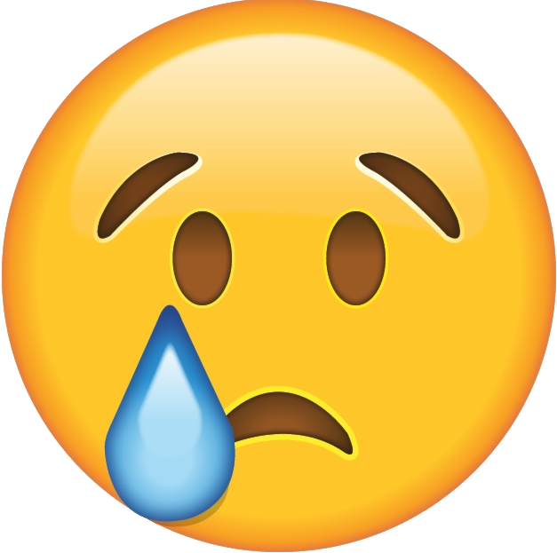

<!DOCTYPE html>
<html lang="en">
    <head>
        
        <meta charset="UTF-8">
        <title>Study: Memory festival</title>
        <script src="./jspsych-6.1.0/jspsych.js"></script>
        <script src="./jspsych-psychophysics-1.3/jspsych-psychophysics.js">
        //I got this from http://jspsychophysics.hes.kyushu-u.ac.jp/
        //should be cited: de Leeuw, J.R. jsPsych: A JavaScript library for creating behavioral experiments in a Web browser. Behav Res 47, 1–12 (2015). https://doi.org/10.3758/s13428-014-0458-y
        // and the kuroki paper (its findable at the link and also in my zotero)          
        </script>
        <script src="./jspsych-6.1.0/plugins/jspsych-html-keyboard-response.js"></script>
        <script src="./jspsych-6.1.0/plugins/jspsych-image-button-response.js"></script>
        <script src="./jspsych-6.1.0/plugins/jspsych-html-button-response.js"></script>
        <script src="./jspsych-6.1.0/plugins/jspsych-image-keyboard-response.js"></script>
        <script src="./jspsych-6.1.0/plugins/jspsych-survey-text.js"></script>
        <script src="./jspsych-6.1.0/plugins/jspsych-instructions.js"></script>
        <script src="./typed-response.js"></script>
        <link href="./jspsych-6.1.0/css/jspsych.css" rel="stylesheet" type="text/css"></link>  

        <!-- packeges needed to interact with php -->
        <script type="text/javascript" src="./js/jquery-1.11.3.js"></script>
        <script type="text/javascript" src="./js/jquery-ui-1.12.1.min.js"></script>
        
    </head>


    <style>
        body {
                background-color:white ;
                color: black;
        }
        .img-container {
            position: relative;
            width: 800px; /* Set the desired width */
            height: 700px; /* Set the desired height */
        }

        .img-container img {
            width: 100%;
            height: 100%;
        }

        .image-overlay-feedback {
            position: absolute;
            display: flex;
            align-items: center;
            justify-content: center;
            width: 100px; /* Set the desired width */
        }

        .feedback-position {
            top: 50%;
            left: 110%;
            transform: translate(-50%, -50%);
        }

        .text-overlay {
            position: absolute;
            display: flex;
            align-items: center;
            justify-content: center;
        }

        .upper-left {
            top: 5%;
            left: 5%;
        }

        .lower-left {
            bottom: 5%;
            left: 5%;
        }

        .upper-right {
            top: 5%;
            right: 5%;
        }

        .lower-right {
            bottom: 5%;
            right: 5%;
        }

        .middle-left {
            top: 50%;
            left: 5%;
            transform: translate(-5%, -50%);
        }

        .middle-right {
            top: 50%;
            right: 5%;
            transform: translate(-5%, -50%);
        }

        .middle-top {
            top: 5%;
            left: 50%;
            transform: translate(-50%, -5%);
        }

        .middle-bottom {
            bottom: 5%;
            left: 50%;
            transform: translate(-50%, -5%);
        }

        .center {
            top: 50%;
            left: 50%;
            transform: translate(-50%, -50%);
        }
                
    </style>
    <body> 
    </body>
    

    <script>

        // disable backspace button as a way to navigate
        if (typeof window.event != 'undefined')
            document.onkeydown = function()
            {
                if (event.srcElement.tagName.toUpperCase() != 'INPUT')
                    return (event.keyCode != 8);
            }
        else
            document.onkeypress = function(e)
            {
                if (e.target.nodeName.toUpperCase() != 'INPUT')
                    return (e.keyCode != 8);
            }


        var assignmentID = turkGetParam('assignmentId');
        var workerID = turkGetParam('workerId');

        if (assignmentID == ""){
            assignmentID = "test"
        }

        if (workerID == ""){
            workerID = "randomPerson"
        }


        // generate a random subject ID with 15 characters
        var subject_id = jsPsych.randomization.randomID(15);

        //construct next page link with worker id and assignment id in the URI
        var nextPage = "end_instructions.html?" + "workerId=" + workerID + "&assignmentId=" + assignmentID + "&subject_id=" + subject_id; 

        // measure the time at the start of the experiment 
        // The getTime() method returns the number of milliseconds between midnight of January 1, 1970 and the specified date.
        var date = new Date()
        var startTime = date.getTime()

        var dateString = date.getDate().toString()+"_"+date.getMonth().toString()+"_"+date.getFullYear().toString()+"_"+date.getHours().toString()+"_"+date.getMinutes().toString()+"_"+date.getSeconds().toString()

        


        // -------      all the FUNCTIONS that javascript doesnt have so I have to write them myself #Imisspython      -------\\
 
        // function to generate random number from 0 to max-1
        function getRandomInt(max) {
            return Math.floor(Math.random() * Math.floor(max));
        }

        // funtion that makes an array from one value to another (including both of these values)
        function createArrayFromAToB(a, b) {
            const result = [];
            for (let i = a; i <= b; i++) {
                result.push(i);
            }
            return result;
        }

        //this function generates a random list of integers between zero and max-1 without repetitions of length length
        function getRandomIndexes(length, max=9) {
            var indexes = []
            if (length > max){
                return "the length is bigger than the max number, which makes this function quite impossible"
            }
            while (indexes.length < length){
                a = getRandomInt(max)
                if (indexes.includes(a)){}
                else{
                    indexes.push(a)
                }

            }
            return indexes
        }

        function getSample(letterList, n) {
            return jsPsych.randomization.sampleWithoutReplacement(letterList, n);
        }


        // this function takes a list as input and returns a list of length length which is a shuffeled sublist of the original list (there is also the option of specifying a max index)
        function getShuffeledSublist(list, length, max=list.length){

            //check if the input is ok and if not return feedback
            if (length > list.length){
                return "the length is bigger than the list, which makes this function quite impossible"
            }else if (max > list.length){
                return "the max is bigger than the list, which makes this function quite impossible"
            }else if (length > max){
                return "the length is bigger than the max number, which makes this function quite impossible"
            }  

            //create a shuffeled sublist
            var shuffeledSublist = []
            var indexes = getRandomIndexes(length, max)
            for (i = 0; i < length; i++) {
                shuffeledSublist.push(list[indexes[i]]);
            }
            return shuffeledSublist
        }

        // this function allows me to create copies of lists and objects, so that modefying the copy does not change the original (copied this of the internet: https://stackoverflow.com/questions/728360/how-do-i-correctly-clone-a-javascript-object)
        function clone(obj) {
            var copy;

            // Handle the 3 simple types, and null or undefined
            if (null == obj || "object" != typeof obj) return obj;

            // Handle Date
            if (obj instanceof Date) {
                copy = new Date();
                copy.setTime(obj.getTime());
                return copy;
            }

            // Handle Array
            if (obj instanceof Array) {
                copy = [];
                for (var i = 0, len = obj.length; i < len; i++) {
                    copy[i] = clone(obj[i]);
                }
                return copy;
            }

            // Handle Object
            if (obj instanceof Object) {
                copy = {};
                for (var attr in obj) {
                    if (obj.hasOwnProperty(attr)) copy[attr] = clone(obj[attr]);
                }
                return copy;
            }

            throw new Error("Unable to copy obj! Its type isn't supported.");
        }


        // function to shuffel arrays
        function shuffel(a) {
            var j, x, i;
            for (i = a.length - 1; i > 0; i--) {
                j = Math.floor(Math.random() * (i + 1));
                x = a[i];
                a[i] = a[j];
                a[j] = x;
            }
            return a;
        }

        //this function shuffels the generated sequences according to the shuffel order arrays
        function getShufffeledSequence(sequence, shuffelList){
            shuffeledSequence =[]
            for (let i in shuffelList){ 
                shuffeledSequence.push(sequence[shuffelList[i]])
            }
            return shuffeledSequence
        };

        function turkGetParam(name) {
            var regexS = "[\?&]" + name + "=([^&#]*)";
            var regex = new RegExp(regexS);
            var tmpURL = document.location.href;
            var results = regex.exec(tmpURL);
            if (results == null) {
                return "";
            } else {
                return results[1];
            }
        }

        // this functions huffels two arrays in the same way
        function shuffleArraysInSync(arr1, arr2) {
            if (arr1.length !== arr2.length) {
                throw new Error("Arrays must have the same length.");
            }

            const length = arr1.length;

            for (let i = length - 1; i > 0; i--) {
                const j = Math.floor(Math.random() * (i + 1));

                // Swap elements in both arrays
                [arr1[i], arr1[j]] = [arr1[j], arr1[i]];
                [arr2[i], arr2[j]] = [arr2[j], arr2[i]];
            }
        }

        // this function counts how often a string apppears in an array
        function countOccurrences(arr, searchStr) {
            let count = 0;
            
            for (let i = 0; i < arr.length; i++) {
                if (arr[i] === searchStr) {
                count++;
                }
            }
            
            return count;
        }


        // -------                all my lovely VARIABLES                -------\\

        
     
        var x = window.innerWidth / 2;  // x center of the screen
        var x_scale = 90   // variable to adjust the positioning
        var y = window.innerHeight / 2;  // y center of the screen
        var x_width = 50

        // height setting for the bars
        var base_height = 150
        var scale_height = 30
        var query_size = 100 // radius of the query

        // variables for reward
        var earned = 8
        var base_reward = 3

        var repetitions = 1 // reduced number of repetitions for the practive blocks

        var breakBetweenBlocks = 60000 // this should be 1 minute


        // settings for the canvas: 
        var canvas_h = base_height+scale_height+30//window.innerHeight-200
        var canvas_w = x_scale+3*x_width//window.innerWidth-200
        var canvas_x_center = canvas_w/2


        // stimulus height for the feedback stimulus 
        var fbHeight = 300

        // presentation time for the word list 
        var presentationTime = 4000

        // presentation time for the letters
        var presentationTime_dist = 1000

        // response time for typing
        var responseTime = 5000

        var responseTime_dist =  10000

        // number of distractor trials
        var NDistracorTrials = 10
        var letterLengths = [3, 3, 4, 4, 5, 5, 6, 6, 7, 7]

        // possible letters to be recalled for the distractor task
        var letters = ['f', 'h', 'j', 'k', 'x', 'n', 'p', 'q', 'r', 's', 't', 'y']; //
        

        // and lets set up the timeline 
        var timeline = []
        

        // ----------                                 set up to be learned lists                                   ----------\\

        // created from rejects from the other lists
        var PairsMediumSim = ['bear wolf',
                            'grass icicle',
                            'statue flag',
                            'rope gauze',
                            'skunk lion',
                            'closet desk',
                            'camper hanger',
                            'fudge pepper',
                            'rifle barrel',
                            'torso bikini',
                            'blower rattle',
                            'faucet pipe',
                            'game puck',
                            'earwig badger',
                            'walnut cherry',
                            'coal fossil',
                            'tomato taco',
                            'dough poppy',
                            'slime chalk',
                            'cloak beard',
                            'clay sponge',
                            'lime garlic',
                            'suit dress',
                            'sheet binder',
                            'leash teacup',
                            'crayon paint',
                            'drink yogurt',
                            'noose kayak',
                            'block switch',
                            'cannon tank',
                            'bison camel',
                            'ankle chest',
                            'dagger wand',
                            'raft walrus',
                            'shorts clasp',
                            'dial knob',
                            'moss daisy',
                            'bedpan chin',
                            'weed cactus',
                            'riser rose',
                            'cocoon kitten',
                            'crepe coat',
                            'lens frame',
                            'mulch root',
                            'beetle sloth',
                            'kite bubble',
                            'acorn squash',
                            'spout stove',
                            'leek fondue',
                            'roll hook',
                            'paper quill',
                            'bowtie sequin',
                            'cape bonnet',
                            'target marker',
                            'chime ring',
                            'crutch wheel',
                            'moose cobra',
                            'money bank',
                            'boar chick',
                            'prism filter',
                            'taffy sauce',
                            'bumper flan',
                            'cookie sundae',
                            'veil napkin',
                            'cereal melon',
                            'scoop slicer',
                            'punch anvil',
                            'mirror awning',
                            'cart shovel',
                            'cigar flask',
                            'arrow thumb',
                            'knee brace',
                            'cymbal mixer',
                            'rosary altar',
                            'heater drain',
                            'fungus leaf',
                            'tripod gyro',
                            'radish juice',
                            'powder floss',
                            'moth spider',
                            'chisel bungee',
                            'mast spool',
                            'tape wire',
                            'tackle vise',
                            'seed grain',
                            'tinsel gold',
                            'makeup tattoo',
                            'stem flower',
                            'kimono pants',
                            'chip card',
                            'gourd hotdog',
                            'bonsai tulip',
                            'coyote parrot',
                            'wrist glove',
                            'anklet insole',
                            'yacht rudder',
                            'hummus chips',
                            'kiwi squid',
                            'toilet vial',
                            'gift brooch',
                            'ship train',
                            'stump cane',
                            'teepee fence',
                            'thread yarn',
                            'fuse bolt',
                            'goose piglet',
                            'horse deer',
                            'kilt apron',
                            'candle kettle',
                            'pony bull',
                            'mouse finger',
                            'jersey badge',
                            'coral ruby',
                            'drill locket',
                            'snake fish',
                            'spoon knife',
                            'saucer bagel',
                            'chili sushi',
                            'soda eggnog',
                            'puddle bucket',
                            'mouth neck',
                            'tablet table',
                            'bacon grill',
                            'racket hubcap',
                            'album film',
                            'koala whale',
                            'bone tongue',
                            'turtle hyena',
                            'staple snack',
                            'tongs cake',
                            'tent crib',
                            'trunk hood',
                            'patch orange',
                            'cougar webcam',
                            'sand marble',
                            'engine brake',
                            'salad peanut',
                            'baton lamp',
                            'trap nest',
                            'tiger otter',
                            'mail spam',
                            'board chair',
                            'stool broom',
                            'skewer clove',
                            'hookah cork',
                            'cheese olive',
                            'camera phone',
                            'valve needle',
                            'crown shield',
                            'sling shower',
                            'armor mullet',
                            'bean apple',
                            'gravel trough',
                            'bush bird',
                            'wrap shawl',
                            'snail leech',
                            'muffin dish',
                            'whip ladle',
                            'nail comb',
                            'cashew pasta',
                            'alpaca wheat',
                            'jeans tiara',
                            'sandal blouse',
                            'sink slide',
                            'hose cable',
                            'berry prune',
                            'teapot teabag',
                            'clover mango',
                            'wreck canoe',
                            'nose elbow',
                            'purse jacket',
                            'pear meat',
                            'waffle lemon',
                            'hand buckle',
                            'buffet nacho',
                            'baby poodle',
                            'taxi subway',
                            'float sail',
                            'slug crab',
                            'plant pliers',
                            'beanie quilt',
                            'magnet crank',
                            'donkey robot',
                            'coffin skull',
                            'pickax stick',
                            'sock helmet',
                            'oven crumb',
                            'banana gravy',
                            'mold grate',
                            'yolk pesto',
                            'tile stair',
                            'iguana eagle',
                            'bench ball',
                            'rock lava',
                            'fire burner',
                            'buggy shoe',
                            'quiche scone',
                            'violin organ',
                            'fern bark',
                            'bowl butter',
                            'ribbon pencil',
                            'hair brush',
                            'panda rabbit',
                            'wafer iron',
                            'gate lock',
                            'goblet crate',
                            'plug modem',
                            'bread ginger',
                            'sheath pulley',
                            'pole ladder',
                            'skirt wreath',
                            'poster book',
                            'orchid vase',
                            'rice pickle',
                            'rocket jetski',
                            'calf sheep',
                            'shrimp grille',
                            'potpie sorbet',
                            'shirt vest',
                            'face mask',
                            'duster mantle',
                            'robe visor',
                            'canvas wood',
                            'banjo pedal',
                            'worm shark',
                            'mousse toast',
                            'wrench belt',
                            'siren timer',
                            'vent screw',
                            'dart hawk',
                            'hoodie collar',
                            'donut tray',
                            'mallet coin',
                            'jewel bead',
                            'amber glass',
                            'maggot ferret',
                            'router laptop',
                            'muff couch',
                            'drawer wallet',
                            'curry lamb',
                            'roller paddle',
                            'beaver duck',
                            'pill bottle',
                            'knot scarf',
                            'wagon jeep',
                            'whisk grits',
                            'lizard clam',
                            'gasket latch',
                            'blazer gear',
                            'door cage',
                            'mint fruit',
                            'noodle puffin',
                            'duct cord',
                            'caviar coffee',
                            'loom braid',
                            'glue bamboo',
                            'swing wing',
                            'thorn plum',
                            'horn bell',
                            'toga diaper',
                            'dryer cooler',
                            'pallet zipper',
                            'sword bullet',
                            'gutter brick',
                            'candy beer',
                            'hammer wedge',
                            'celery turkey',
                            'pulpit arch',
                            'zebra goat',
                            'strap plate',
                            'kale oyster',
                            'coil airbag',
                            'buoy scuba',
                            'onion aloe',
                            'corset yoke',
                            'stereo screen',
                            'mussel pastry',
                            'toad wasp',
                            'boat truck',
                            'salami corn',
                            'foot saddle',
                            'monkey crow',
                            'navel stilt',
                            'fork shears',
                            'kebab pita',
                            'vacuum foam',
                            'patty latte',
                            'pump hinge',
                            'weasel sled',
                            'hole shell',
                            'syrup carrot',
                            'grape beaker',
                            'petal peach',
                            'omelet stew',
                            'peeler basil',
                            'button folder',
                            'towel straw',
                            'okra almond',
                            'cooker potato',
                            'reel slot',
                            'doll girl',
                            'flour soup',
                            'wine honey',
                            'swan puppy',
                            'pecan cream',
                            'tree papaya',
                            'beet juicer',
                            'rack pocket'
                            ];
        

        // ------------------------- Set up the lists and the order in which the list are presented ----------------------------\\

        // set up the list length that will be presented
        // var ListLengths = [Array(2).fill(15), Array(2).fill(30)].flat();
        var ListLengths = [30] //[15, 30]; [15] [30] List length are displayed between subjects
        var NofLists = [4] //[5] [4] // this determines how often each of the above list lengths gets desplayed
        var ContextSizes = [[0, 4, 8, 11, 14]]//  [0, 1, 6, 7][0, 4, 8, 11, 14] this is what I used for Pilot 1 with set size 15: [0, 1, 2, 4, 6, 8]
        var alwaysShownContextSizes = ["None", 3, 5] // ["None", 2, 3, 4]["None", 3, 5]
        // reverse context n[15,14,11,7, 3], [30,29,25,20, 15]
        

        // determine the random word pairs which will be part of each list
        var shuffeledPairsMediumSim = shuffel(clone(PairsMediumSim));

        // determine the order in which the word pair lists are presented and the size of the corresponding contexts
        var ListLengthsOrder = []
        var ContextSizeOrder = []
        for (var i = 0; i < ListLengths.length; i++){
            ListLengthsOrder.push(Array(NofLists[i]).fill(ListLengths[i]))

            //This ensures, that evry participants has one list per listsize, without any contexts
            var ContextSizesublist = clone(alwaysShownContextSizes)

            // this adds a random set of the other context sizes
            ContextSizesublist = ContextSizesublist.concat(getShuffeledSublist(ContextSizes[i], NofLists[i]-ContextSizesublist.length))
            
            ContextSizeOrder.push(shuffel(ContextSizesublist))
        }
        ListLengthsOrder = ListLengthsOrder.flat();
        ContextSizeOrder = ContextSizeOrder.flat()
        // shiffel the above lists the same way
        shuffleArraysInSync(ListLengthsOrder, ContextSizeOrder)

        // set up an array in which to save the word pair lists
        var WordPairLists = [];
    

        // make the lists
        var startWordPosition = 0;
        for (var i = 0; i < ListLengthsOrder.length; i++){
            var sublist = [];
            sublist.push(shuffeledPairsMediumSim.slice(startWordPosition, startWordPosition + ListLengthsOrder[i]));
            var startWordPosition = startWordPosition + ListLengthsOrder[i];
            WordPairLists.push(sublist[0])
         };


        // ------------------------- Determine which wordpairs get a context ----------------------------\\

        // pictures and positions for the contexts
        var contexts = [
            "./images/park.png", 
            "./images/supermarket.png",
            "./images/beach.png",
            "./images/sunset.png",
            //"./images/cave.jpg",
            "./images/winter.png",
            "./images/ocean.jpg",
            "./images/mountain.png",
            "./images/lake.png"
        ];
        
        var textPositions = [
            "middle-bottom",
            "lower-right",
            "upper-right",
            "lower-left",
            //"center",
            "middle-right",
            "middle-top",
            "middle-left",
            "upper-left"

        ];

        var NoneContext = "./images/NoneContext.jpg";

        var NoneContextPosition = "center";


        // shiffel the above lists the same way
        shuffleArraysInSync(contexts, textPositions);

        var ContextPairs = [];
        var PositionPairs = [];

        var startPosition = 0;
        for (var i = 0; i < ListLengthsOrder.length; i++){
            if (ContextSizeOrder[i] == "None"){

                ContextPairs.push([NoneContext, NoneContext]);
                PositionPairs.push([NoneContextPosition, NoneContextPosition]);

            }else{
                var cont = [];
                var pos = [];
                cont.push(contexts.slice(startPosition, startPosition + 2));
                pos.push(textPositions.slice(startPosition, startPosition + 2));
                var startPosition = startPosition + 2;
                ContextPairs.push(cont[0]);
                PositionPairs.push(pos[0]);
            };
        };


        var AllContexts = [];
        var AllTextPositions = [];

        for (var i = 0; i < ListLengthsOrder.length; i++){

            var Context1Indices = getRandomIndexes(ContextSizeOrder[i], ListLengthsOrder[i]);
            var tempContexts = [];
            var tempPositions = [];

            for (var j = 0; j < ListLengthsOrder[i]; j++){

                if(Context1Indices.includes(j)){
                    tempContexts.push(ContextPairs[i][0]);
                    tempPositions.push(PositionPairs[i][0]);
                }else{
                    tempContexts.push(ContextPairs[i][1]);
                    tempPositions.push(PositionPairs[i][1]);
                }

            };

            AllContexts.push(tempContexts);
            AllTextPositions.push(tempPositions);
        };
        
        


        // ------------------------- make the list of the cue and target words ----------------------------\\

        // all positions here are coded from the back
        var NQueriedPositionsMin = Math.min(...ListLengthsOrder) ;

        // lets get some random positions for the other 5 queries from each list
        var AllQueriedPositions = [];

        for (var i = 0; i < ListLengthsOrder.length; i++){
            
            if (ListLengthsOrder[i] == NQueriedPositionsMin){
                quriedPositions = getRandomIndexes(ListLengthsOrder[i], ListLengthsOrder[i])
                // this code might need correction
                quriedPositions[quriedPositions.indexOf(0)] = ListLengthsOrder[i];
            }else{
                // this makes sure, that on avareage the lag between the two lists is the same
                quriedPositions = [shuffel(createArrayFromAToB(1, NQueriedPositionsMin)), shuffel(createArrayFromAToB(NQueriedPositionsMin + 1, ListLengthsOrder[i]))].flat()
            }
            

            AllQueriedPositions.push(quriedPositions)
            
        };

        // Now lets make the lists with the actual cues and targets

        var AllCues = [];
        var AllTargets = [];
        var AllQueryContexts = [];
        var AllQueryLocations= [];

        for (var i = 0; i < AllQueriedPositions.length; i++){
            var Cues = [];
            var Targets = [];
            var QueriedContexts = [];
            var queryLocation = [];
            for (var j = 0; j < AllQueriedPositions[i].length; j++){
                var queriedPos = -AllQueriedPositions[i][j]
                var QueriedWordPair = WordPairLists[i].at(queriedPos)
                // randomise which word is the target and which is the cue
                var cuetarget = shuffel([0,1])
                var QueriedWordPair =  QueriedWordPair.split(" ")
                Cues.push(QueriedWordPair[cuetarget[0]])
                Targets.push(QueriedWordPair[cuetarget[1]])
                QueriedContexts.push(AllContexts[i].at(queriedPos));
                queryLocation.push(AllTextPositions[i].at(queriedPos));
            }
            AllCues.push(Cues);
            AllTargets.push(Targets);
            AllQueryContexts.push(QueriedContexts);
            AllQueryLocations.push(queryLocation);
        };


        // make the list of letters to be presented in the distractor task

        var AllLetterSequences = []
        var AllLetterLengthOrder = []


        for (let i in ListLengthsOrder){

            var letterLengthOrder = shuffel(clone(letterLengths))
            AllLetterLengthOrder.push(letterLengthOrder)
            var LetterSequences = []

            for (n = 0; n < NDistracorTrials; n++){

                correctSEQ = getSample(letters, letterLengthOrder[n])
                LetterSequences.push(correctSEQ)
        
            };
            AllLetterSequences.push(LetterSequences)
        };


        // ------------------------- make some egeneric trials for futher usage ----------------------------\\

        

        var cross = {
            obj_type: 'cross',
            startX: canvas_w/2, // location in the canvas
            startY: canvas_h/2,
            line_length: 50,
            line_width: 6,
            line_color: 'black', // You can use the HTML color name instead of the HEX color.
            fill_color: 'black',
            show_start_time: 0 // from the trial start (ms)
        }

        // fication cross for fgurther usage
        var fixationcross = {
            type: 'psychophysics',
            background_color: "white",
            canvas_width: canvas_w,
            canvas_height: canvas_h,
            stimuli: [cross],
            choices: jsPsych.NO_KEYS,
            trial_duration: 1000,
            data:{
                Stimulus_type: "fixationcorss"
            }
                
        };

        // announcement of a new block and time to wait
        var new_block = {
            type: 'html-keyboard-response',
            choices:['space'],
            trial_duration: breakBetweenBlocks,
            stimulus: function(){
                return betweenBlocks+ Math.round((percentages[i]*100)).toString()+ "%" + BonusBetwennBlocks + (Math.round((percentages[i]*100))*reward_per_block_memory/100).toString() + " Pounds" + betweenBlocks2 // this gives feedback about how many trials were correct in the last block
            }
        };

        var new_block_dist = {
            type: 'html-keyboard-response',
            trial_duration: 30000,
            choices:['space'],

            stimulus: function(){
                return betweenBlocks_dist + Math.round((percentages_dist[i]*100)).toString()+ "%" + BonusBetwennBlocks + (Math.round((percentages_dist[i]*100))*reward_per_block_dist/100).toString() + " Pounds"+ betweenBlocks2_dist // this gives feedback about how many trials were correct in the last block
            }
        };

        var BeReady = {
            type: 'html-keyboard-response',
            trial_duration: 2000,
            choices:jsPsych.NO_KEYS,
            stimulus: "<h1> Be ready, the task is starting now! </h1>"
        };

        // announcement of the end of the learning phase and start of the distractor task
        var end_of_learning = {
            type: 'html-keyboard-response',
            choices: ['space'],
            trial_duration: 30000,
            stimulus: function(){
                return DistractorTaskInstructions 
            }
        };

        var end_of_learning_practice = {
            type: 'html-keyboard-response',
            choices: jsPsych.NO_KEYS,
            trial_duration: 5000,
            stimulus: function(){
                return DistractorTaskInstructionsPractice3
            }
        };


        // the end
        var end = {
            type: 'html-keyboard-response',
            choices:['space'],
            stimulus: function(){
                if(total_percentage > 0.0){
                    return betweenBlocks+ "<b>" +Math.round((percentages[ListLengthsOrder.length-1]*100)).toString()+ 
                        "%<br></b>" + "Your total score is:" + "<b><br>" +
                        "Word pairs:" + Math.round((total_percentage)*100).toString()+ "<b><br>" + 
                        "Letter task:" + Math.round((total_percentage_dist)*100).toString()+ "<b><br>" + "%</b>" + last_block// this gives feedback about how many trials were correct in the last block
                }else{
                    return betweenBlocks+ "<b>" + Math.round((percentages[ListLengthsOrder.length-1]*100)).toString()+ "%</b>" +
                        "%<br></b>" + "Your total score is:" + "<b><br>" +
                        "Word pairs:" + Math.round((total_percentage)*100).toString()+ "<b><br>" + 
                        "Letter task:" + Math.round((total_percentage_dist)*100).toString()+ "<b><br>" + "%</b>"
                }
            },
            data:{
                MTurkID: workerID,
                Stimulus_type: "end_of_experiment",
                TrialType: "experimental_trials",
                save: true,
                assignmentID: assignmentID,
                date: dateString,
                subject_id: subject_id
               
            },
            on_finish: function(data){
                var date2 = new Date()
                var endTime = date2.getTime()
                data.timeMs = date2-date // total time of the task in milliseconds
                data.timeMin = (date2-date)/60000 // total time of the task in Minutes
                data.score = total_percentage
            }
        };


        var feedback = {
            type: 'image-keyboard-response',
            choices: jsPsych.NO_KEYS,
            stimulus_height: fbHeight,
            maintain_aspect_ration: true,
            trial_duration: 1000,
            stimulus: function(){
                var last_trial_correct = jsPsych.data.get().last(1).values()[0].correct;
                if(last_trial_correct == true){
                    return './Stimuli/right.png';
                } else if (jsPsych.data.get().last(1).values()[0].response == "0"){
                    return "./Stimuli/neutral.png";
                } else {
                    return "./Stimuli/wrong.png";
                }
            },
        };
        

        // -----------                                    instructions                                                  -----\\


        var betweenBlocks = "<p>Score for the last Block: </p>"

        var BonusBetwennBlocks = "<p> Earned bonus in last block: </p>"

        var betweenBlocks2 = "<p> <br> You get a 1 minute break now. The next block will start automatically once the minute is up.<br> Press spacebar if you already want to continue to the next Block. <br> Please remember to respond as <b>fast</b> as you can! </p>"

        var betweenBlocks_dist = "<p>Score for the Letter task: </p>"

        var betweenBlocks2_dist = "<p> <br> In the next part, we ask you to recall some of the words from the list you learned. <br>"+
            " For this we will present you with one of the words in a pair. Press spacebar as soon as you remember the other word. <br>"+
            " Please remember to respond as <b>fast</b> as you can! <br>"+
            " <b>But it is very important that you only press the spacebar once you remember the word!</b><br>"+
            " After pressing spacebar you will only have 3 seconds to type in the first three letters of the correct word (you can also type the whole word). <br>"+
            " If you cant remember the correct word please just type in <b>0</b>. <br>"+
            " Good Luck! <br> <br>The task will start automatically in a few seconds. Please be ready. <br> You can also press spacebar to start the task now.<br></p>"

        var RecallTaskInstructions = "<p> <br> That was the end of part two. <br>"+
            "<br> In part three we ask you to recall some of the words from the list you learned in part one. <br>"+
            " For this we will present you with one of the words in a pair. Press spacebar as soon as you remember the other word. <br>"+
            " Please remember to respond as <b>fast</b> as you can! <br> After pressing spacebar you will only have 3 seconds to type in the first three letters of the correct word (you can also type the whole word). <br>"+
            " Good Luck! <br> <br>The task will start automatically in a few seconds. Please be ready. </p>"


        var last_block = "<p> <br> Congratulations! You made it through the experiment. <br> Press spacebar to continue to some short final questions."+
            "<br> The page will turn blanck for 10 seconds to ensure that the data gets saved correctly.</p>"

        var DistractorTaskInstructions = "<p> <br> That was the end of the list. <br> Next comes a short perfomance based memory task. <br>" +
            " You will be presented with sequences of 3-7 letters. your task is to type in the sequence in the correct order after each presentation." + 
            " <br> Please try to get as many sequences as possible correct. <br> Good Luck! <br> <br>The task will start automatically in a few seconds. Please be ready. <br> You can also press spacebar to start the task now.<br></p>"

        var DistractorTaskInstructionsPractice = "<p> <br> That was the end of the practice list. <br> Next comes a short perfomance based memory task. <br>" +
            " You will be presented with sequences of 3-7 letters. Your task is to type in the sequence in the correct order after each presentation." + 
            "<br> Press <b> Next</b> to see an example sequence." 

        var DistractorTaskInstructionsPractice2 = "The sequence you saw was <b>pfq</b>, so the correct response would be to type in <b>pfq</b> in the response field that is shown after each sequence. "+ 
            "<br> You have to be relatively quick with typing in your resonse, as you only get a few seconds to do so.<br>" +
            "<br> Lets try this out on a few practice trials.</p>" 

        var DistractorTaskInstructionsPractice3 = " Please try to get as many sequences as possible correct. <br> Good Luck! <br> <br>The task will start automatically in a few seconds. Please be ready. </p>"

        //---------------------------------- distractor task instruction trials ----------------------\\
        var distractorInstructions = {
            type: 'instructions',
            pages: [
                DistractorTaskInstructionsPractice
            ],
            show_clickable_nav: true
        }

        var exampleSequence = ["p", "f", "q"]

        var distractorInstructions2 = {
            type: 'instructions',
            pages: [
                DistractorTaskInstructionsPractice2
            ],
            show_clickable_nav: true
        }

        var end_of_learning_practice = {
            type: 'html-keyboard-response',
            choices: jsPsych.NO_KEYS,
            trial_duration: 5000,
            stimulus: function(){
                return DistractorTaskInstructionsPractice3
            }
        };

        var RecallInstructions = {
            type: 'instructions',
            pages: [
                RecallTaskInstructions
            ],
            show_clickable_nav: true
        }


        // ---------------------------------  some more Instructions -----------------------------------------//

        
        var instructions1 = "<h3>3. The Experiment<br></h3>"
        var instructions2 = "<p>In the next part, we will start with the real experiment<br><br>"+
            "Please try your best to remember the word pairs and be as fast and accurate as possible in the recall task.<br></p>"
        var instructions3 = "<p>As soon as you press <b>Next</b> the experiment will start and your next chance for a break will only be at the end of the first block.<br>"+
            "so now is your chance for a short break.</p>"

        

        var StartOfExperiment = {
            type: 'instructions',
            pages: [
                instructions1,
                instructions2,
                instructions3
            ],
            show_clickable_nav: true
        }

        timeline.push(StartOfExperiment, BeReady)


        // --------------And Finally the real experiment begins!!!! -------------------------------------------------------------------------------------------\\
        // counter, for calculating the final reward
        var total_percentage = 0
        var total_percentage_dist = 0
        var block = 0
        var num = 0
        var percentages = Array(ContextSizeOrder.length).fill(0);
        var percentages_dist = Array(ContextSizeOrder.length).fill(0);

        // --------------------------------- reward translation to pounds -----------------------------------------//
        var total_reward = 9
        var total_reward_memory = 6
        var total_reward_dist = 3
        var reward_per_block_memory = total_reward_memory/ContextSizeOrder.length
        var reward_per_block_dist = total_reward_dist/ContextSizeOrder.length


        
        // randomize the context identity

        // -------------------------------- Start the real experiment ------------------------------------ //
        // this creates the timline for all the blocks contained in the blockOrder variable 
        for (let i in ListLengthsOrder){
            timeline.push(BeReady)
            block +=1

            // Firts lets create all the trials for the list presentation
            num = 0

            for (let j in WordPairLists[i]){

                num += 1
                
                var wordPairPresentation = {
                    type: 'html-keyboard-response',
                    stimulus: [WordPairLists[i][j], AllContexts[i][j], AllTextPositions[i][j]],
                    choices: "NO_KEYS",
                    trial_duration: presentationTime,
                    stimulus: function(){
                        const myArray = WordPairLists[i][j].split(" ")
                        return '<div class="img-container"><div class="text-overlay  ' + AllTextPositions[i][j] + '"><h1>' + myArray[0] + '<p> - <br> </p>' + myArray[1] + '</h1></div></div>'
                    },
                    data: {
                        ListLength: ListLengthsOrder[i],
                        Trial_index: num,
                        Phase: "Learning",
                        correct: "-",
                        ExperimentalPhase: true,
                        Block: block,
                        word1: WordPairLists[i][j].split(" ")[0],
                        word2: WordPairLists[i][j].split(" ")[1],
                        Context: AllContexts[i][j],
                        Context_position: AllTextPositions[i][j],
                        ContextSize: ContextSizeOrder[i] === "None" ? "None" : countOccurrences(AllContexts[i], AllContexts[i][j]),
                        MTurkID: workerID,
                        save: true,
                        assignmentID: assignmentID,
                        date: dateString,
                        subject_id: subject_id
                    }
                };
                var WordResponse1 ={
                    type: "typed-response",
                    prompt: '<div class="img-container"><div class="text-overlay  ' + AllTextPositions[i][j] + '"><h1>' +  WordPairLists[i][j].split(" ")[0] + '</h1></div></div>',
                    trial_duration: responseTime, 
                    data: {
                        ListLength: ListLengthsOrder[i],
                        Trial_index: num,
                        Phase: "LearningResponse",
                        Block: block,
                        ExperimentalPhase: true,
                        MTurkID: workerID,
                        save: true,
                        assignmentID: assignmentID,
                        date: dateString,
                        subject_id: subject_id,
                        word1: WordPairLists[i][j].split(" ")[0],
                        word2: WordPairLists[i][j].split(" ")[1],
                        Context: AllContexts[i][j],
                        Context_position: AllTextPositions[i][j],
                        ContextSize: ContextSizeOrder[i] === "None" ? "None" : countOccurrences(AllContexts[i], AllContexts[i][j]),
                        cue:WordPairLists[i][j].split(" ")[0],
                        target:WordPairLists[i][j].split(" ")[1]
                    },
                    on_finish: function(data) {

                        if (data.response.slice(0, 3) == data.target.slice(0,3)){

                            data.correct = true;

                        }else{
                            data.correct = false;
                        }
                    }
                };
                var WordResponse2 ={
                    type: "typed-response",
                    prompt: '<div class="img-container"><div class="text-overlay ' + AllTextPositions[i][j] + '"><h1>' +  WordPairLists[i][j].split(" ")[1] + '</h1></div></div>',
                    trial_duration: responseTime, 
                    data: {
                        ListLength: ListLengthsOrder[i],
                        Trial_index: num,
                        Phase: "LearningResponse",
                        Block: block,
                        ExperimentalPhase: true,
                        MTurkID: workerID,
                        save: true,
                        assignmentID: assignmentID,
                        date: dateString,
                        subject_id: subject_id,
                        word1: WordPairLists[i][j].split(" ")[0],
                        word2: WordPairLists[i][j].split(" ")[1],
                        Context: AllContexts[i][j],
                        Context_position: AllTextPositions[i][j],
                        ContextSize: ContextSizeOrder[i] === "None" ? "None" : countOccurrences(AllContexts[i], AllContexts[i][j]),
                        cue:WordPairLists[i][j].split(" ")[1],
                        target:WordPairLists[i][j].split(" ")[0]
                    },
                    on_finish: function(data) {

                        if (data.response.slice(0, 3) == data.target.slice(0,3)){

                            data.correct = true;

                        }else{
                            data.correct = false;
                        }
                    }
                };

                var feedbackLearning = {
                    type: 'html-keyboard-response',
                    choices: jsPsych.NO_KEYS,
                    stimulus_height: fbHeight,
                    maintain_aspect_ration: true,
                    trial_duration: 2000,
                    stimulus: function(){
                        var last_trial_correct = jsPsych.data.get().last(1).values()[0].correct;
                        const myArray = WordPairLists[i][j].split(" ")
                        if(last_trial_correct == true){
                            return '<div class="img-container"><div class="text-overlay  ' + AllTextPositions[i][j] + 
                                '"><h1>' + myArray[0] + '<p> - <br> </p>' + myArray[1] + 
                                    '</h1></div></div>' + '<br>' + 
                                    '';
                        } else {
                            return '<div class="img-container"><div class="text-overlay  ' + AllTextPositions[i][j] + 
                                '"><h1>' + myArray[0] + '<p> - <br> </p>' + myArray[1] + 
                                '</h1></div></div>' + '<br>' + 
                                '';
                        }
                    },
                };

                timeline.push(fixationcross, wordPairPresentation, fixationcross, WordResponse1, feedbackLearning, fixationcross, WordResponse2, feedbackLearning)
            }

            timeline.push(end_of_learning);
            num = 0


            // --------------------- distractor task maybe a working memory task with random number recall ---------------------------------\\
            
            // determine lengthOrder in which the letters are presented
            timeline.push(BeReady, fixationcross);

            for (n = 0; n < NDistracorTrials; n++){
                timeline.push(fixationcross);
                num += 1
                for(l = 0; l < AllLetterLengthOrder[i][n]; l++){
                    var letter_presentation = {
                        type: "html-keyboard-response",
                        trial_duration: presentationTime_dist,
                        stimulus:"<h1>" + AllLetterSequences[i][n][l] + "</h1>",
                        choices: "NO_KEYS",
                        
                        data: {SequenceLength: AllLetterLengthOrder[i][n],
                            Trial_index: num,
                            Phase: "LetterPresentation",
                            Block: block,
                            ExperimentalPhase: true,
                            MTurkID: workerID,
                            save: true,
                            assignmentID: assignmentID,
                            date: dateString,
                            subject_id: subject_id,
                            sequence: AllLetterSequences[i][n].join(""),
                            letterSeen:  AllLetterSequences[i][n][l],
                            correct: false
                        }
                    };
                    timeline.push(letter_presentation);
                }
                

                var LetterResponse ={
                    type: "typed-response",
                    prompt: "<h1>" +  "What was the presented sequence?" + "</h1>",
                    trial_duration: responseTime_dist, 
                    data: {
                        SequenceLength: AllLetterLengthOrder[i][n],
                        Trial_index: num,
                        ExperimentalPhase: true,
                        Phase: "LetterRecallResponse",
                        Block: block,
                        MTurkID: workerID,
                        save: true,
                        assignmentID: assignmentID,
                        date: dateString,
                        subject_id: subject_id,
                        sequence: AllLetterSequences[i][n].join("")
                    },
                    on_finish: function(data) {

                        if (data.response ==  data.sequence){

                            data.correct = true;
                            // change the data of the bars
                            jsPsych.data.get().last(2).filter({Phase: 'LetterPresentation'}).values()[0].correct = true
                            

                            percentages_dist[i] = percentages_dist[i] + 1/NDistracorTrials
                            total_percentage_dist = total_percentage_dist + 1/(NDistracorTrials*ListLengthsOrder.length)

                        }else{
                            data.correct = false;
                        }
                    }
                };

                

                timeline.push(LetterResponse, feedback);
            }

            var new_block_dist = {
                type: 'html-keyboard-response',
                trial_duration: 30000,
                choices:['space'],

                stimulus: function(){
                    return betweenBlocks_dist + Math.round((percentages_dist[i]*100)).toString()+ "%" +  BonusBetwennBlocks + (Math.round((percentages_dist[i]*100))*reward_per_block_dist/100).toString() + " Pounds" + betweenBlocks2_dist // this gives feedback about how many trials were correct in the last block
                }
            };

            timeline.push(new_block_dist, BeReady, fixationcross)


            // --------------------------------- And finally we have the word query trials ------------------------------------\\
            num = 0
            for (let j in AllCues[i]){
                var CurrentNumberOfQueries = AllCues[i].length
                num += 1
                var CuePresentation = {
                        type: 'html-keyboard-response',
                        stimulus: '<div class="img-container"><div class="text-overlay ' + AllQueryLocations[i][j] + '"><h1>' +  AllCues[i][j] + '</h1></div></div>'+
                        "<br><br><br> Please press space as soon as you recall the target.",
                        choices:['space'],
                        data: {
                            ListLength: ListLengthsOrder[i],
                            Trial_index: num,
                            Phase: "CuePresentation",
                            correct: false,
                            ExperimentalPhase: true,
                            Block: block,
                            MTurkID: workerID,
                            save: true,
                            assignmentID: assignmentID,
                            date: dateString,
                            subject_id: subject_id,
                            cue:AllCues[i][j],
                            target:AllTargets[i][j],
                            Context: AllQueryContexts[i][j],
                            Context_position: AllQueryLocations[i][j],
                            ContextSize: ContextSizeOrder[i] === "None" ? "None" : countOccurrences(AllQueryContexts[i], AllQueryContexts[i][j]),
                            queriedPosition: AllQueriedPositions[i][j]
                        }
                    };
                var WordResponse ={
                    type: "typed-response",
                    prompt: "<h1>" +  AllCues[i][j] + "</h1>",
                    trial_duration: responseTime, 
                    data: {
                        ListLength: ListLengthsOrder[i],
                        Trial_index: num,
                        Phase: "RecallResponse",
                        Block: block,
                        ExperimentalPhase: true,
                        MTurkID: workerID,
                        save: true,
                        assignmentID: assignmentID,
                        date: dateString,
                        subject_id: subject_id,
                        cue:AllCues[i][j],
                        target:AllTargets[i][j],
                        Context: AllQueryContexts[i][j],
                        Context_position: AllQueryLocations[i][j],
                        ContextSize: ContextSizeOrder[i] === "None" ? "None" : countOccurrences(AllQueryContexts[i], AllQueryContexts[i][j]),
                        queriedPosition: AllQueriedPositions[i][j]
                    },
                    on_finish: function(data) {

                        if (data.response.slice(0, 3) == AllTargets[i][j].slice(0,3)){

                            data.correct = true;
                            // change the data of the bars
                            jsPsych.data.get().last(2).filter({Phase: 'CuePresentation'}).values()[0].correct = true
                           

                            percentages[i] = percentages[i] + 1/AllCues[i].length
                            total_percentage = total_percentage + (1/AllCues[i].length)/ListLengthsOrder.length

                        }else{
                            data.correct = false;
                        }
                    }
                };


                timeline.push(CuePresentation, WordResponse, feedback, fixationcross);
        
            };

            var new_block = {
                type: 'html-keyboard-response',
                choices:['space'],
                trial_duration: breakBetweenBlocks,
                stimulus: function(){
                    return betweenBlocks+ Math.round((percentages[i]*100)).toString()+ "%" + BonusBetwennBlocks + (Math.round((percentages[i]*100)*reward_per_block_memory)/100).toString() + " Pounds" + betweenBlocks2 // this gives feedback about how many trials were correct in the last block
                }
            };
            
            if (i == ListLengthsOrder.length-1){
                timeline.push(end)
            }else{
                timeline.push(new_block)
            }
            
        };


        

        // ----------------------------- save the data ---------------------------------\\

        function saveData1(filedata, finalPercentage){
            var filename = "../data/ID_" + subject_id + "_MTURKID" + workerID + "_PercentageCorrect" + finalPercentage + "_Context_Long_experiment" + ".txt";
            $.post("./results_data.php", {postresult: filedata + "\n", postfile: filename })
        }

        function saveData2(filedata, finalPercentage) {
            var filename = "../data/ID_" + subject_id + "_MTURKID" + workerID + "_PercentageCorrect" + finalPercentage + "_Context_Long_experiment" + ".json";
            $.post("./save_data.php", { postresult: filedata + "\n", postfile: filename })
        }


        function sayHi() {
            window.location.href = nextPage;   
        }


        data_sent = false
        jsPsych.init({
            timeline: timeline,
            show_progress_bar: true,
            on_finish: function() {
                if (!data_sent) {
                    data_sent = true;
                    
                    saveData1(jsPsych.data.get().filter({save: true}).json().toString(), Math.round((total_percentage*total_reward_memory/total_reward + total_percentage_dist*total_reward_dist/total_reward)*100).toString());
                    saveData2(jsPsych.data.get().filter({save: true}).json(), Math.round((total_percentage*total_reward_memory/total_reward + total_percentage_dist*total_reward_dist/total_reward)*100).toString())
                    //saveDataToDb()
                    console.log("end")

                    setTimeout(sayHi, 10000); // 2 sekunden
                    

                    //window.location.href = nextPage; //send them to the next page


                };

            },

        })

        var all_data = jsPsych.data.get("rt");
    </script>


</html>